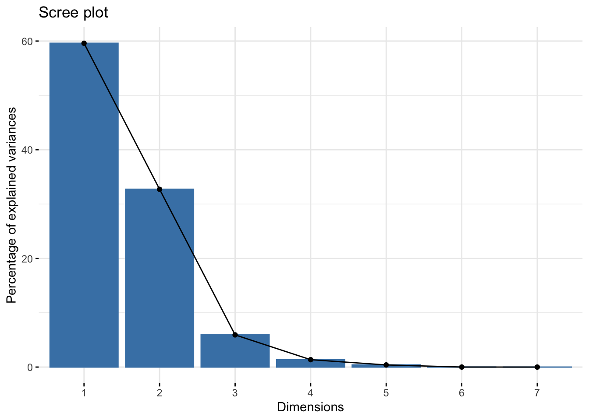
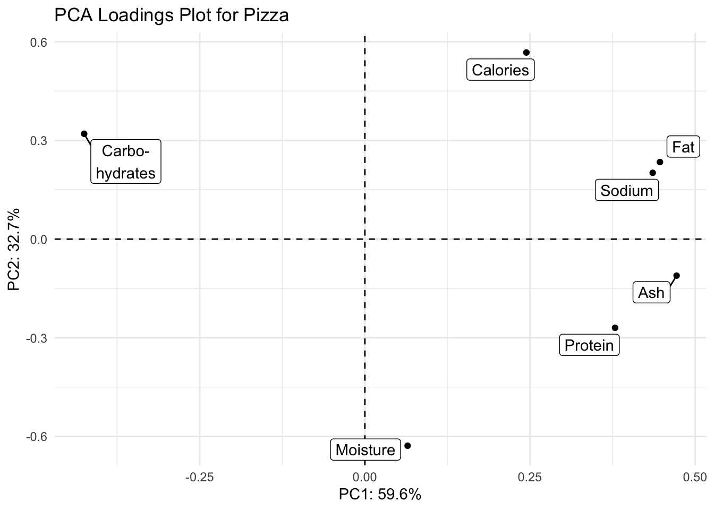
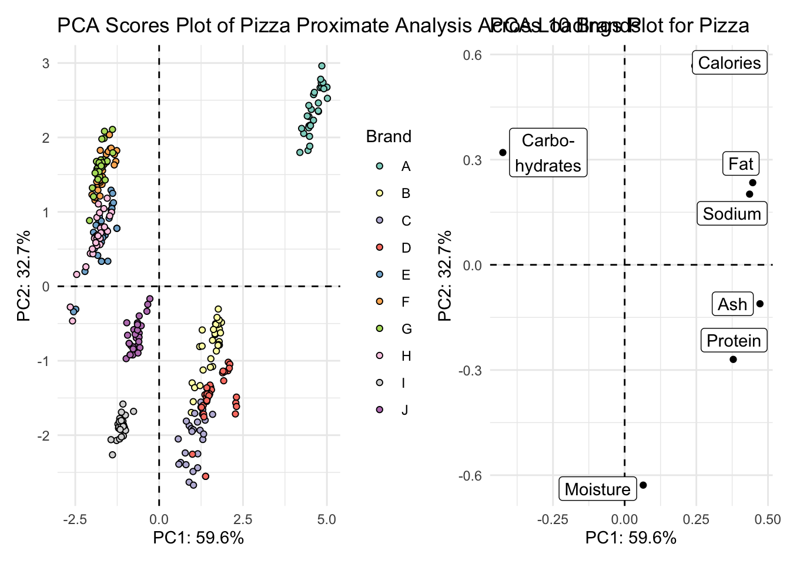
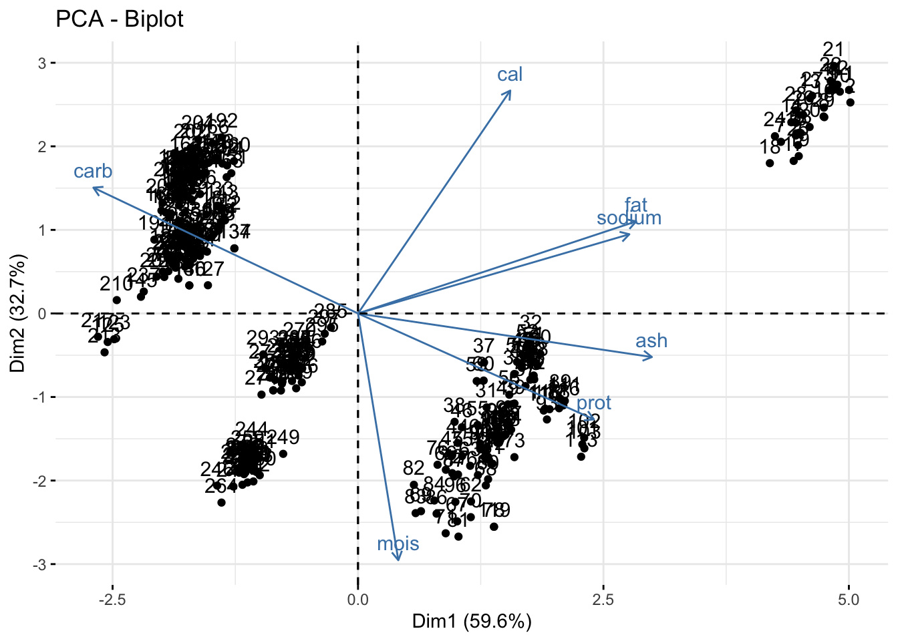

Principal Components Analysis Recitation Solutions 🍕
Week 10
Introduction
Today is the first recitation for Module 4 where we put together a lot of the material we’ve learned in the first 3 modules of this course. Today’s material is on conducting principal components analysis (PCA) using R, and visualizing the results with some tools we’ve already learned to use, and some new wrangling and viz tips along the way.

library(tidyverse) # everything
library(readxl) # reading in excel sheets
library(factoextra) # easy PCA plotting
library(glue) # easy pasting
library(ggrepel) # repelling labels away from their points
library(patchwork) # for combining and arranging plotsRead in data
We will be using data about pizza, which includes data collected about the nutritional information of 300 different grocery store pizzas, from 10 brands.
pizza <- read_csv(file = "https://raw.githubusercontent.com/f-imp/Principal-Component-Analysis-PCA-over-3-datasets/master/datasets/Pizza.csv")Rows: 300 Columns: 9
── Column specification ────────────────────────────────────────────────────────
Delimiter: ","
chr (1): brand
dbl (8): id, mois, prot, fat, ash, sodium, carb, cal
ℹ Use `spec()` to retrieve the full column specification for this data.
ℹ Specify the column types or set `show_col_types = FALSE` to quiet this message.How different are each of the different brands of pizzas analyzed overall?
1. Run a PCA
Let’s take a look at this new dataset
knitr::kable(head(pizza))| brand | id | mois | prot | fat | ash | sodium | carb | cal |
|---|---|---|---|---|---|---|---|---|
| A | 14069 | 27.82 | 21.43 | 44.87 | 5.11 | 1.77 | 0.77 | 4.93 |
| A | 14053 | 28.49 | 21.26 | 43.89 | 5.34 | 1.79 | 1.02 | 4.84 |
| A | 14025 | 28.35 | 19.99 | 45.78 | 5.08 | 1.63 | 0.80 | 4.95 |
| A | 14016 | 30.55 | 20.15 | 43.13 | 4.79 | 1.61 | 1.38 | 4.74 |
| A | 14005 | 30.49 | 21.28 | 41.65 | 4.82 | 1.64 | 1.76 | 4.67 |
| A | 14075 | 31.14 | 20.23 | 42.31 | 4.92 | 1.65 | 1.40 | 4.67 |
pizza_pca <- prcomp(pizza[,-c(1:2)],
center = TRUE,
scale = TRUE)We can also look at the output of our PCA in a different way using the function summary().
summary(pizza_pca) Importance of components:
PC1 PC2 PC3 PC4 PC5 PC6 PC7
Standard deviation 2.042 1.5134 0.64387 0.3085 0.16636 0.01837 0.003085
Proportion of Variance 0.596 0.3272 0.05922 0.0136 0.00395 0.00005 0.000000
Cumulative Proportion 0.596 0.9232 0.98240 0.9960 0.99995 1.00000 1.000000We can convert this summary into something later usable by extraction the element importance from summary(alkaloids_pca) and converting it to a dataframe.
importance <- summary(pizza_pca)$importance |>
as.data.frame()
knitr::kable(head(importance))| PC1 | PC2 | PC3 | PC4 | PC5 | PC6 | PC7 | |
|---|---|---|---|---|---|---|---|
| Standard deviation | 2.042494 | 1.513426 | 0.6438652 | 0.3085032 | 0.1663641 | 0.0183741 | 0.0030853 |
| Proportion of Variance | 0.595970 | 0.327210 | 0.0592200 | 0.0136000 | 0.0039500 | 0.0000500 | 0.0000000 |
| Cumulative Proportion | 0.595970 | 0.923180 | 0.9824000 | 0.9960000 | 0.9999500 | 1.0000000 | 1.0000000 |
By looking at the summary we can see, for example, that the first two PCs explain 92.32% of variance.
2. Make a scree plot of the percent variance explained by each component
Using fviz_eig()
We can do this quickly using fviz_eig().
fviz_eig(pizza_pca)Warning in geom_bar(stat = "identity", fill = barfill, color = barcolor, :
Ignoring empty aesthetic: `width`.
Manually
If you wanted to make a scree plot manually, you could by plotting using a wrangled version of the importance dataframe we made earlier.
# pivot longer
importance_tidy <- importance |>
rownames_to_column(var = "measure") |>
pivot_longer(cols = PC1:PC7,
names_to = "PC",
values_to = "value")
# plot
importance_tidy |>
filter(measure == "Proportion of Variance") |>
ggplot(aes(x = PC, y = value)) +
geom_col(alpha = 0.1, color = "black") +
# added 0.02 to move the percent up a little
# pasted value but converted to a percent, rounded, and added a percent sign
geom_text(aes(y = (value + 0.02), label = glue("{round(value*100, 1)}%"))) +
scale_y_continuous(labels = scales::percent) +
theme_minimal() +
labs(x = "Principal component",
y = "Percent variance explained",
title = "Pizza scree plot")
3. Make a scores plot of samples, coloring each sample by its brand
Using fviz_pca_ind()
We can also look at a scores plot using fviz_pca_ind() where ind means individuals. Here, each point is a sample.
fviz_pca_ind(pizza_pca)
Manually
We want to plot the scores, which are in provided in pizza_pca$x.
We can convert the list into a dataframe of scores values by using as.data.frame(). Then we can bind back our relevant metadata so they’re all together. Note, to use bind_cols() both datasets need to be in the same order. In this case they are so we are good.
# create a df of alkaloids_pca$x
scores_raw <- as.data.frame(pizza_pca$x)
# bind meta-data
scores <- bind_cols(pizza[,"brand"], # pull the pizza brand columnm do it by indexing
scores_raw) # create objects indicating percent variance explained by PC1 and PC2
PC1_percent <- round((importance[2,1])*100, # index 2nd row, 1st column, times 100
1) # round to 1 decimal
PC2_percent <- round((importance[2,2])*100, 1)
# plot
(scores_plot <- scores |>
ggplot(aes(x = PC1, y = PC2, fill = brand)) +
geom_hline(yintercept = 0, linetype = "dashed") +
geom_vline(xintercept = 0, linetype = "dashed") +
geom_point(shape = 21, color = "black") +
scale_fill_brewer(palette = "Set3") +
theme_minimal() +
labs(x = glue("PC1: {PC1_percent}%"),
y = glue("PC2: {PC2_percent}%"),
title = "PCA Scores Plot of Pizza Proximate Analysis Across 10 Brands",
fill = "Brand"))
4. Make a loadings plot of samples
Using fviz_pca_var()
We can also look at a loadings plot using fviz_pca_var() where var means variables. Here, each point is a variable.
fviz_pca_var(pizza_pca)Warning: Using `size` aesthetic for lines was deprecated in ggplot2 3.4.0.
ℹ Please use `linewidth` instead.
ℹ The deprecated feature was likely used in the ggpubr package.
Please report the issue at <https://github.com/kassambara/ggpubr/issues>.Warning: `aes_string()` was deprecated in ggplot2 3.0.0.
ℹ Please use tidy evaluation idioms with `aes()`.
ℹ See also `vignette("ggplot2-in-packages")` for more information.
ℹ The deprecated feature was likely used in the factoextra package.
Please report the issue at <https://github.com/kassambara/factoextra/issues>.
Manually
We can also make a more customized loadings plot manually using ggplot and using the dataframe alkaloids_pca$rotation.
# grab raw loadings, without any metadata
loadings_raw <- as.data.frame(pizza_pca$rotation)
# convert rownames to column
loadings <- loadings_raw |>
rownames_to_column(var = "analysis_type")
# create vector of labels as we want them to appear
# "\n" inserts a line break
analysis_type_labels <- c("Moisture",
"Protein",
"Fat",
"Ash",
"Sodium",
"Carbo-\nhydrates",
"Calories")We can then plot with ggplot like normal.
(loadings_plot <- loadings |>
ggplot(aes(x = PC1, y = PC2, label = analysis_type_labels)) +
geom_hline(yintercept = 0, linetype = "dashed") +
geom_vline(xintercept = 0, linetype = "dashed") +
geom_point() +
geom_label_repel() +
scale_fill_brewer() +
theme_minimal() +
labs(x = glue("PC1: {PC1_percent}%"),
y = glue("PC2: {PC2_percent}%"),
title = "PCA Loadings Plot for Pizza"))
5. Create either a biplot, or a visualization that shows both your scores and loadings plot together.
With patchwork
scores_plot + loadings_plot
Biplot
Using fviz_pca().
You can make a biplot quickly with fviz_pca(). Note, fviz_pca_biplot() and fviz_pca() are the same.
fviz_pca(pizza_pca)
Instead of making this plot manually, let’s go through how to alter the existing plot made with fviz_pca(). We can do this because factoextra creates ggplot objects. To start off, we need to be using a dataframe that includes our metadata.
# save as a new df
pizza_pca_labelled <- pizza_pca
# assign alkaloid_labels to rownames
rownames(pizza_pca_labelled$rotation) <- analysis_type_labels
# plot
fviz_pca(pizza_pca_labelled, # pca object
label = "var",
repel = TRUE,
geom.var = c("text", "point", "arrow"),
col.var = "black") +
geom_point(aes(fill = pizza$brand), shape = 21) +
scale_fill_brewer(palette = "Set3") +
theme_minimal() +
theme(legend.position = "none") +
labs(x = glue("PC1: {PC1_percent}%"),
y = glue("PC2: {PC2_percent}%"),
title = "PCA Pizza Biplot",
fill = "Brand")
Manually
Or we could do this manually. First we need to scale our data so that the scores and loadings are on the same scale.
I can write a quick function to allow normalization.
normalize <- function(x) return((x - min(x))/(max(x) - min(x)))Then I can nornalize the scores using the scale function, since the loadings are already normalized.
scores_normalized <- scores |>
mutate(PC1_norm = scale(normalize(PC1), center = TRUE, scale = FALSE)) |>
mutate(PC2_norm = scale(normalize(PC2), center = TRUE, scale = FALSE)) |>
select(brand, PC1_norm, PC2_norm, everything()) # reorder How did it go? PC1_norm and PC2_norm should all now be between -1 and 1
head(scores_normalized) # looks good# A tibble: 6 × 10
brand PC1_norm[,1] PC2_norm[,1] PC1 PC2 PC3 PC4 PC5 PC6
<chr> <dbl> <dbl> <dbl> <dbl> <dbl> <dbl> <dbl> <dbl>
1 A 0.653 0.475 5.00 2.67 0.0393 -0.144 0.284 -0.00233
2 A 0.654 0.448 5.02 2.53 0.0969 -0.353 0.215 0.00295
3 A 0.626 0.474 4.80 2.67 0.0753 0.108 -0.0350 0.00541
4 A 0.582 0.405 4.46 2.28 0.120 0.0539 0.174 0.00562
5 A 0.583 0.383 4.46 2.16 0.000736 -0.117 0.313 0.00169
6 A 0.587 0.384 4.50 2.16 0.175 -0.115 0.200 0.00518
# ℹ 1 more variable: PC7 <dbl>Now we can plot together the scores and loadings in one plot.
scores_normalized |>
ggplot() +
geom_hline(yintercept = 0, linetype = "dashed") +
geom_vline(xintercept = 0, linetype = "dashed") +
geom_point(aes(x = PC1_norm, y = PC2_norm, fill = brand), shape = 21) +
geom_point(data = loadings, aes(x = PC1, y = PC2)) +
geom_text_repel(data = loadings,
aes(x = PC1, y = PC2, label = analysis_type_labels)) +
scale_fill_brewer(palette = "Set3") +
theme_minimal() +
labs(x = glue("PC1: {PC1_percent}%"),
y = glue("PC2: {PC2_percent}%"),
title = "PCA Biplot of Pizza Proximate Analysis Across 10 Brands",
fill = "Brand",
caption = "Proximate analyses in black are loadings")